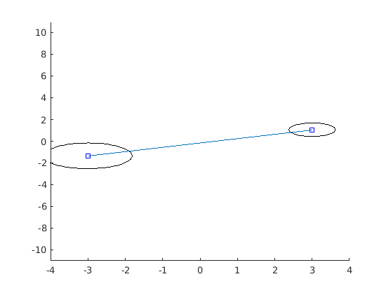
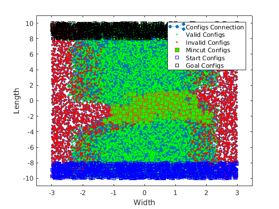
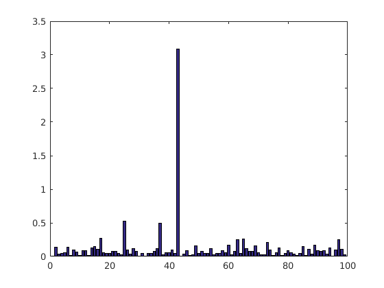
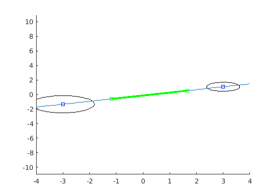

Estimating Road Clearance Using Gradient Descent
Contents
Initialization
clear ; close all; clc
wheelbase = 1.78;
vehicle_width = 1.58;
track = 1.3;
==================== Part 1: Load Data ====================
load('clearance_roads_pos_rand_01.mat');
frame_id = 4
idx = find(configsLog(:,7) == frame_id);
configs = configsLog(idx,1:6);
idx = find(safeMincutLog(:,2) == frame_id);
mc_idx = safeMincutLog(idx,1);
mc_configs = configs(mc_idx,:);
idx = find(adjacencyLog(:,4) == frame_id);
adjacency = adjacencyLog(idx,1:3);
idx = find(startNodesLog(:,2) == frame_id);
startNodes = startNodesLog(idx,1);
idx = find(goalNodesLog(:,2) == frame_id);
goalNodes = goalNodesLog(idx,1);
idx = find(obstacleLog(:,5) == frame_id);
obstacles = obstacleLog(idx,1:3);
figure
axis([-4 4 -11 11])
hold on
plot(obstacles(:,1),obstacles(:,2),'bs')
rectangle('Position',[obstacles(1,1)-obstacles(1,3) obstacles(1,2)-obstacles(1,3) 2*obstacles(1,3) 2*obstacles(1,3)],'Curvature',[1 1]);
rectangle('Position',[obstacles(2,1)-obstacles(2,3) obstacles(2,2)-obstacles(2,3) 2*obstacles(2,3) 2*obstacles(2,3)],'Curvature',[1 1]);
plot(obstacles(:,1),obstacles(:,2));
figure
G = digraph(spconvert(adjacency));
xCord = configs(:,1);
yCord = configs(:,2);
h = plot(G,'XData',xCord,'yData',yCord,'MarkerSize',3);
hold on
axis ([-3.5 3.5 -11 11])
valid_idx = find(configs(:,5)==1);
valid = configs(valid_idx,:);
invalid_idx = find(configs(:,5)==0);
invalid = configs(invalid_idx,:);
plot(valid(:,1),valid(:,2),'g.');
plot(invalid(:,1),invalid(:,2),'r.');
plot(mc_configs(:,1),mc_configs(:,2),'s','MarkerSize',7,'MarkerFaceColor','g');
plot(configs(startNodes,1),configs(startNodes,2),'bs');
plot(configs(goalNodes,1),configs(goalNodes,2),'ks');
legend('Configs Connection', 'Valid Configs', 'Invalid Configs', 'Mincut Configs', 'Start Configs', 'Goal Configs')
xlabel('Width')
ylabel('Length')
frame_id =
4
 
=================== Part 2: Safety Assuming Known Line Parameters ==================
slope = (obstacles(2,2)-obstacles(1,2))/(obstacles(2,1)-obstacles(1,1));
intercept = obstacles(1,2) - slope*obstacles(1,1);
a = -slope; b = 1; c = -intercept;
line = [a;b;c];
idx = ismember(adjacency(:,1), mc_idx);
mc_adj = adjacency(idx,1:3);
idx = ismember(adjacency(:,2), mc_idx);
mc_adj = [mc_adj; adjacency(idx,1:3)];
projectedPoints = [];
for i=1:size(mc_adj,1)
if (i == 4350)
asda = 1;
end
edge = [configs(mc_adj(i,1),1:3); configs(mc_adj(i,2),1:3)];
dist1 = (edge(1,1)*a + edge(1,2)*b + c)/sqrt(a^2+b^2);
dist2 = (edge(2,1)*a + edge(2,2)*b + c)/sqrt(a^2+b^2);
if ((dist1 < 0 & dist2 < 0) || (dist1 > 0 & dist2 > 0))
continue;
else
point = projectEdgeOnLine(line, edge, wheelbase);
projectedPoints = [projectedPoints; [point i]];
end
end
xval = projectedPoints(:,1);
yval = projectedPoints(:,2);
[x y] = meshgrid(1:size(projectedPoints,1),1:size(projectedPoints,1));
dist = sqrt((xval(x)-xval(y)).^2 + (yval(x)-yval(y)).^2);
[computed_safety_value, maxIndex] = max(dist(:));
[row, col] = ind2sub(size(dist), maxIndex);
obstacle_radius = obstacles(1,3) + obstacles(2,3);
dist_obs = sqrt(sum((obstacles(1,1:2)-obstacles(2,1:2)).^2));
actual_safety_value = dist_obs - obstacle_radius - vehicle_width;
safety_diff_with_known_line = computed_safety_value - actual_safety_value
figure
axis([-4 4 -11 11])
hold on
plot(obstacles(:,1),obstacles(:,2),'bs')
plot(projectedPoints(row,1),projectedPoints(row,2),'gs')
plot(projectedPoints(col,1),projectedPoints(col,2),'gs')
rectangle('Position',[obstacles(1,1)-obstacles(1,3) obstacles(1,2)-obstacles(1,3) 2*obstacles(1,3) 2*obstacles(1,3)],'Curvature',[1 1]);
rectangle('Position',[obstacles(2,1)-obstacles(2,3) obstacles(2,2)-obstacles(2,3) 2*obstacles(2,3) 2*obstacles(2,3)],'Curvature',[1 1]);
xt = -4:0.1:4;
yt = -a*xt-c;
plot(xt,yt)
plot(projectedPoints(:,1),projectedPoints(:,2),'g.')
h1 = openfig('data/road_clearance_pos_rand_01-2.fig','reuse');
ax1 = gca;
return
safety_diff_with_known_line =
-0.0322
 
=================== Part 3: Gradient descent ===================
fprintf('Running Gradient Descent ...\n')
data = mc_configs;
X = data(:, 1); y = data(:, 2); slope = mean(data(:,3))-90
m = length(y);
X = [ones(m, 1), data(:,2)];
theta = [0; tand(slope)];
iterations = 1000;
alpha = 0.01;
computeCost(X, y, theta)
theta = gradientDescent(X, y, theta, slope, alpha, iterations)
fprintf('Theta found by gradient descent: ');
fprintf('%f %f \n', theta(1), theta(2));
hold on;
plot(X(:,2), X*theta, '-')
legend('Training data', 'Linear regression')
hold off
============= Part 4: Compute safety distance using projection =============
safe_mc = data(:,2:4);
norm_factor = sqrt(theta(2)^2 + 1);
a = -theta(2); b=1; c=-theta(1);
point_dist_to_line = (safe_mc(:,1:2)*[a;b] + c)/norm_factor;
idx = find(abs(point_dist_to_line) < 0.5);
idx1 = find(point_dist_to_line < 0);
idx2 = find(point_dist_to_line >= 0);
mc1 = safe_mc(idx1,:);
mc2 = safe_mc(idx2,:);
mean(mc1(:,3))
mean(mc2(:,3))
points = safe_mc(:,1:2) + [point_dist_to_line.*[cosd(safe_mc(:,3))./(sind(slope-safe_mc(:,3)))] point_dist_to_line.*[sind(safe_mc(:,3))./(sind(slope-safe_mc(:,3)))]];
hold on
plot(points(:,1),points(:,2),'bo');
xval = points(:,1);
yval = points(:,2);
[x y] = meshgrid(1:numel(point_dist_to_line),1:numel(point_dist_to_line));
dist = sqrt((xval(x)-xval(y)).^2 + (yval(x)-yval(y)).^2);
[safety_value, maxIndex] = max(dist(:));
[row, col] = ind2sub(size(dist), maxIndex);
safety_value
============= plot =============
configs = safe_mc;
x_prm = configs(:,1);
y_prm = configs(:,2);
t_prm = configs(:,3);
u_prm = cosd(t_prm);
v_prm = sind(t_prm);
quiver(x_prm,y_prm,u_prm,v_prm,0.5,'g')